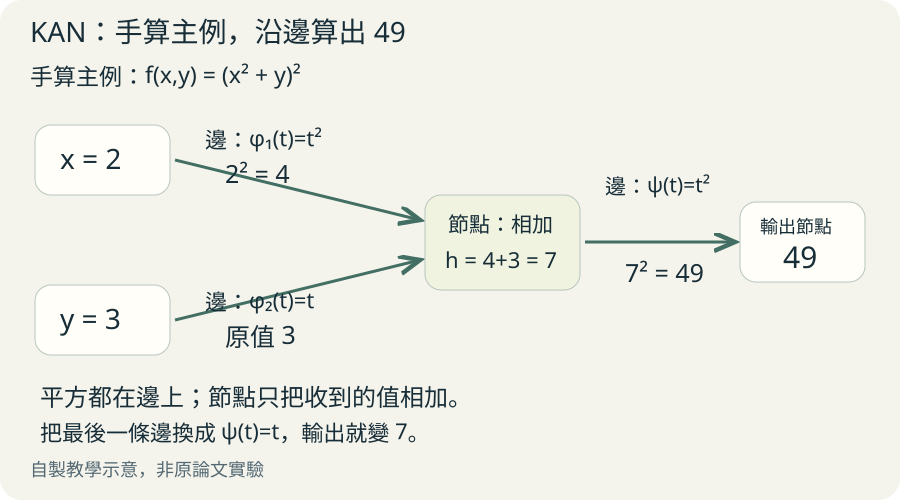
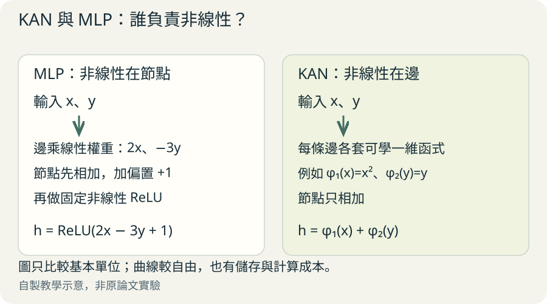
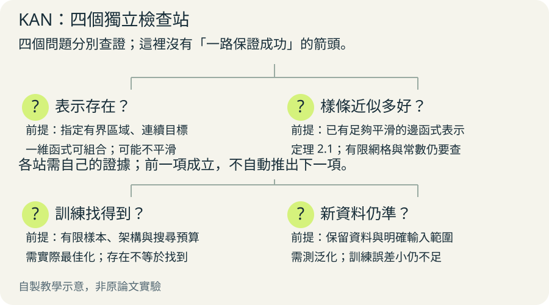

把神經網路想成一間飲料店。傳統 MLP 的每條管線先控制流量，在匯合處經過固定處理機；KAN 則讓每條管線裝上可以調整形狀的小機器，匯合處只把結果加起來。這是教學比喻：機器真正處理的是數字，不是飲料。
先學會沿著三條邊走
先看下方「三條邊的手算」。這是自編教學例子，不是作者實驗。假設我們想計算「x 的平方加 y，再把結果平方」，輸入 x=2、y=3。
第一條邊把 2 平方，得到 4；第二條邊讓 3 原樣通過。隱藏節點把 4 和 3 相加，得到 7。最後一條邊把 7 平方，輸出 49。
為什麼需要最後一條邊？因為節點只會加總，不會自己平方。把最後一條邊改成原樣通過，答案就會變成 7。這正是讀 KAN 圖時最需要抓住的規則。
三條邊的手算

放大閱讀圖解 ↗ · 窄螢幕可在圖內左右滑動。

圖解文字說明
- 兩個輸入
x=2，y=3
- 各走自己的邊
x 邊平方：2²=4；y 邊原樣通過：3
- 隱藏節點
只加總：4+3=7
- 最後一條邊
把 7 平方：7²=49
自己換一組數字
把 x 換成 1、y 換成 2。沿著相同路線，依序得到 1、2、3、9。若最後一條邊改成原樣通過，答案是多少？先算完再往下讀。
答案是 3。這個小任務是為了分清楚「邊做變換」和「節點做加總」。但我們剛才直接給了正確曲線；真實學習只有樣本，模型未必能找到這種簡潔分解。
MLP 與 KAN，各把工作放在哪裡？
MLP 是多層感知器，一種常見的前饋神經網路。它通常讓每條邊乘一個可學權重，在節點加總後，再套固定的非線性函式。非線性就是不能只用一條直線描述的變換。
KAN 把可學的一維函式放在邊上，節點只加總。同一個輸入走不同邊，可以經過不同曲線。它同時改了函式是否可學，以及函式放在哪裡；不是只換掉節點的激活函式。此差異對照原文 §2.2、式 (2.5)–(2.9)。
誰負責改變訊號？

放大閱讀圖解 ↗ · 窄螢幕可在圖內左右滑動。

圖解文字說明
- MLP 的邊
乘可學權重，例如 2x
- MLP 的節點
先加總，再套固定非線性函式
- KAN 的邊
套可學曲線，例如平方、彎曲的樣條
- KAN 的節點
把各條邊傳來的結果加總
曲線怎麼學：樣條是什麼？
一維函式只接收一個數字。原始 KAN 用 B 樣條來表示它：把一段輸入範圍切成網格，再用局部多項式拼成曲線，訓練調整這些局部形狀的係數。
這樣做是為了讓每條邊有可調整、又能在電腦中儲存的曲線。原文完整邊函式還包含 SiLU 殘差分支與尺度參數，並非完全沒有可學的數字。
原文 §2.2 式 (2.10)–(2.12)：邊函式 = 可學尺度 × SiLU 輸入變換 + 可學尺度 × 樣條；樣條 = 各個局部 B 樣條基底乘上係數後加總。訓練透過反向傳播計算參數對誤差的影響，再更新參數。
§2.4 的網格加密會先把舊曲線擬合到較細網格，再繼續訓練；圖 2.3 同時提醒，測試誤差可能反升，更多係數不保證更好。
定理沒有保證訓練一定成功
名字來自 Kolmogorov–Arnold 表示定理：在指定有界區域上的連續多變數函式，可用一維連續函式和加法組合表示。這是存在性敘述，不是訓練演算法的成功保證。
原定理的一維函式可能不平滑；有限樣條網路不能直接繼承任意精度的實用保證。原文定理 2.1 另外假設目標已有足夠平滑的邊函式表示，才推導網格近似誤差率。常數仍可能依賴維度。
請分開問三件事：好分解是否存在、有限樣本能否泛化、最佳化能否找到它。原文章節定位是 §2.1–§2.3；不能把其中一個答案當成另兩個答案。
四個問題，要分開回答

放大閱讀圖解 ↗ · 窄螢幕可在圖內左右滑動。

圖解文字說明
- 存在表示？
理論上能不能用一維函式與加法組合？函式可能不平滑
- 近似誤差？
有限樣條能逼近多好？定理 2.1 需要平滑表示等前提
- 訓練找到？
從有限樣本更新參數，能否找到理想分解？存在不代表找得到
- 新資料泛化？
沒見過的輸入是否仍準？訓練誤差小不保證測試誤差小
看得見曲線，還不等於科學解釋
原文先用稀疏正則化鼓勵少數連線發揮作用，再剪枝移除不重要節點。接著把曲線擬合成候選解析函式，例如帶尺度、平移的正弦函式。這些步驟是為了讓人能提出與檢查假說。
結理論與物理案例包含重新找到已知關係，也包含人的結構假設。§4.3 為簡化公式加入多項式比值等偏好；§4.4 也由人指定線性邊等形式。這些介入不能算成模型憑空發現。
可讀曲線不保證唯一解釋，更不等於因果律或數學證明。原文附錄 C 展示，隨機種子、正則化和網格設定都會影響結果。這些限制在使用 KAN 作研究助手時必須保留。
從曲線到可檢查的假說
- 訓練曲線
從樣本調整邊函式，先檢查預測誤差
- 剪枝
鼓勵稀疏並移除不重要部分，讓圖更容易讀
- 人選符號函式
人或候選搜尋提出平方、正弦等形式；這是一項假設
- 替換後檢驗
微調並檢查保留資料與適用範圍，仍須領域驗證
參數少，為什麼仍可能慢？
原文的效能實驗主要是小型科學任務，包括函式擬合、特殊函式、物理方程與簡單偏微分方程；不能直接推廣為語言與視覺大模型的優勢。
§6 作者自述當時相同參數量下，KAN 訓練通常約慢十倍。這是原始實作的觀察，不是所有後續實作的固定倍率。每條邊要計算曲線，所以參數數量不等於運算時間。
§4.3 表 3 的註解也補充，小型 MLP 可以取得接近的準確率；該補充標為公開而未發表。這提醒我們，擊敗一個大的基線，不代表架構必然更省參數。
若自行比較，本文建議固定資料切分、合理分配雙方調參預算，並報告多次隨機種子的結果、訓練時間、記憶體及參數量。人的函式指定也應記錄。
回到原論文的閱讀路線
先讀 §2.2 圖 2.2，帶著手算例子認出邊與節點。再讀 §2.4 圖 2.3，理解為什麼加密網格也可能過擬合。接著讀 §2.5 圖 2.4，看人如何剪枝、猜函式和重新訓練。
再挑 §4.3 結理論或 §4.4 Anderson localization（安德森局域化）科學案例，逐步標記人提供的先驗。最後回看 §2.1–§2.3 的定理假設，以及 §6 的成本限制。本文依官方 arXiv:2404.19756v5 自讀編寫。
原始 KAN 論文目前尚無本庫摘要與翻譯。庫內 MetaKAN 摘要及精要翻譯是另一篇後續論文，討論訓練記憶體；不能冒稱為原始 KAN 的翻譯。來源筆記連結可能需要原始私人論文庫的存取權。
原文與來源
此頁依下列固定快照編寫；教學例子與程式片段用來解釋方法，請回到原文確認研究設定與結果。